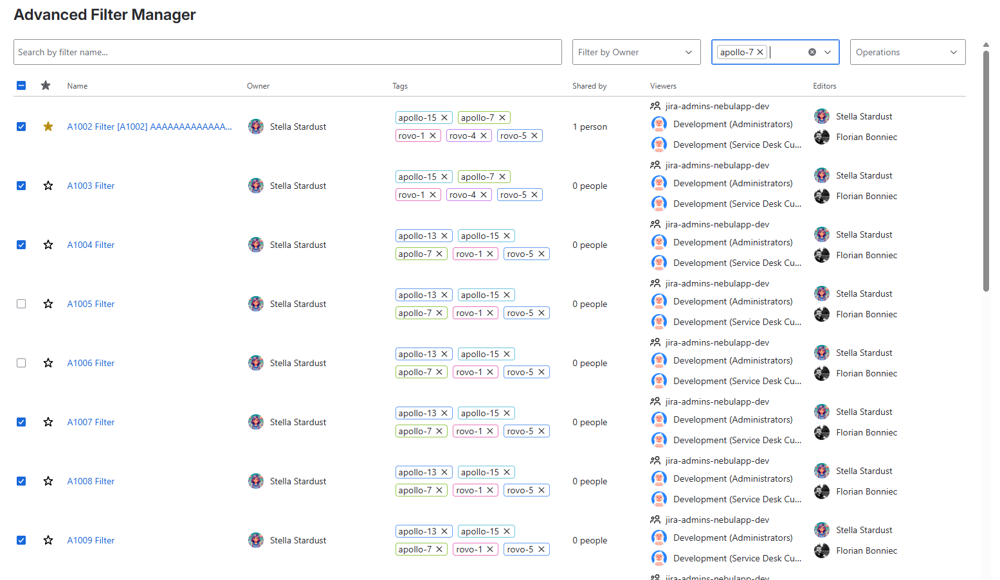
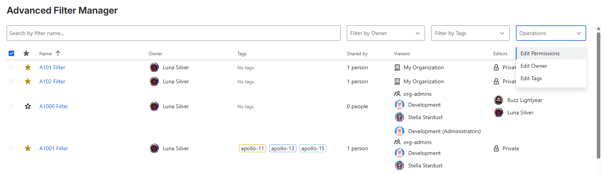
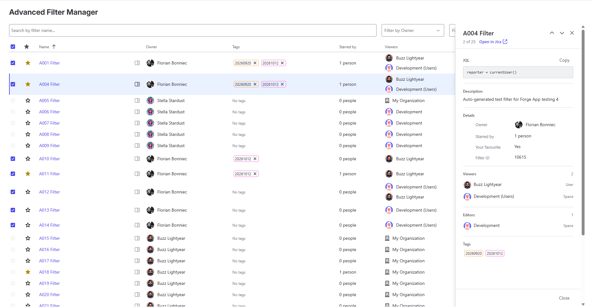
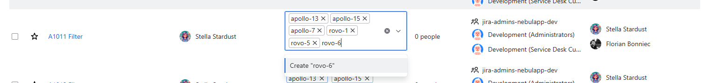
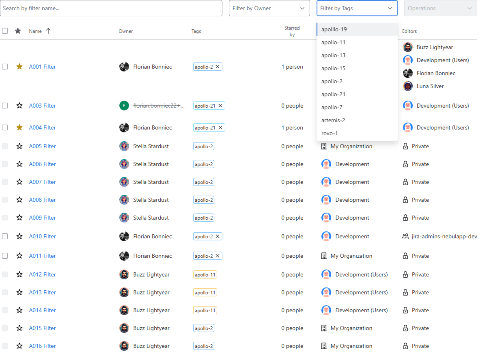
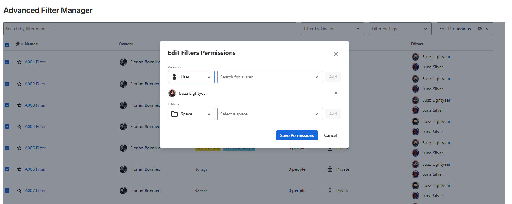
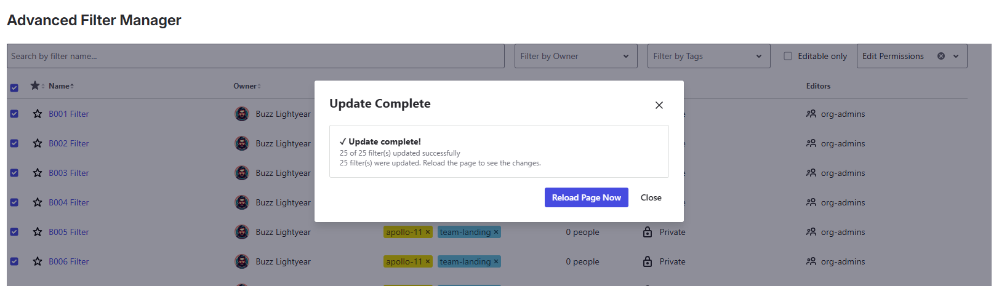
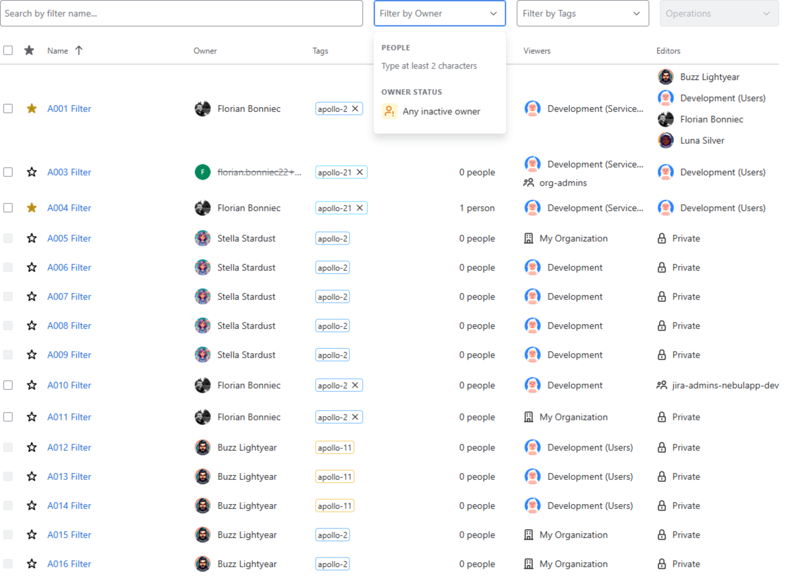

Advanced Filter Manager
Documentation for Jira Cloud
Overview
Advanced Filter Manager is a powerful Jira Cloud app that gives you full control over your saved filters. Jira's built-in filter management can feel limited when dealing with a large number of filters across multiple teams and projects. This app provides a centralized view to organize, search, share, tag, and maintain your filters effortlessly.

Quick Start
Find filters → Inspect details → Select filters → Apply bulk operations
Search or sort the list, check the filter details when you need more context, then select filters you can edit and choose a bulk action.
Key Features & Usage
1. Bulk Operations
Select multiple filters at once to perform mass updates, saving you clicks and time. Through the bulk actions menu, you can bulk-update tags, bulk-share and bulk-change owners across dozens of filters simultaneously.
Need more context before making a change? Open the Filter Details Panel to check a filter's JQL, owner, permissions, and what uses it — the boards and subscriptions that depend on it. Your current selection stays in place.
Delete filters in bulk. New in 3.0.0 Select the filters you no longer need and delete them all at once from the bulk actions menu. You can only delete filters you own or administer in Jira, and each run is limited to 100 filters. The app asks you to type DELETE exactly to confirm before deleting anything (SUPPRIMER in French), and you can stop a run in progress at any time with Stop. When the run finishes, the summary tells you what was deleted, what was skipped, and what could not be confirmed — if a result is unconfirmed, refresh the list before trying again.

2. Filter Details Panel
Filter names don't always tell you what a filter does. Open the Filter Details Panel from the list to check its JQL, description, owner, permissions, tags, and what uses it — the boards and subscriptions that depend on it — without opening the filter in Jira.

How to view filter details
- Find the filter in the table.
- Click the details icon beside its name. Its accessible label starts with View details for.
- The panel opens on the right with the filter's details.
- Use Previous filter or Next filter to move through the filters on the page.
- Close the panel with Close, the X icon, or the Esc key.
Click the filter name to open it in Jira, just as before.
Details shown in the panel
| Field | What it shows |
|---|---|
| JQL | The full Jira Query Language expression, with a Copy button. |
| Description | The description, when one is set. |
| Owner | The owner, with an inactive or deleted account indicator when applicable. |
| Starred by | How many people have starred the filter. |
| Your favourite | Whether you have starred the filter. |
| Filter ID | The filter's Jira identifier. |
| Boards | Jira Software boards that use this filter, with links to open them. Only boards you can see are listed. |
| Subscriptions | Users and groups subscribed to this filter. |
| Viewers | The complete list of viewing permissions. |
| Editors | The complete list of editing permissions. |
| Tags | Tags associated with the filter. |
Check what uses a filter before you change it New in 3.0.0
Before you edit, transfer, or delete a filter, look at the Boards and Subscriptions sections. They show you what depends on the filter, so you don't break a board or stop someone's subscription updates. Boards load when the panel opens; use Show all to expand the list and Load more to fetch the rest. Only boards you can see are listed. If your site doesn't use Jira Software, or the board scope hasn't been approved yet, the Boards section is hidden instead of showing an error.
Move between filters without losing your selection
Previous and Next follow the filters on the current page, including your search and sort order. Opening, moving through, or closing the panel does not change which filters you selected. You can review details while preparing a bulk operation and keep your selection.
Read-only access
Use the panel to review filters, not edit them. To change JQL, descriptions, names, permissions, or tags, use the app's management tools or Jira. You can inspect any filter you can access, even if you don't have permission to edit it and its bulk-selection box is disabled.
3. Filter Tagging
Stop relying on awkward naming conventions to group your filters. Add custom tags directly to any filters you have permission to edit to create intuitive categories (e.g., "q3-okrs", "frontend-bugs").
- Add, remove, or create new tags inline on individual filters, or efficiently through bulk operations.
- Reuse tags across your site. Tag suggestions are shared across your Jira instance, much like Jira labels. Pick an existing tag instead of retyping it. Tags that are no longer in use disappear from the list automatically.
- Easily filter your filters by one or multiple tags (a filter must match all of the selected tags).


4. Sharing & Permissions Management
Quickly view who has access to which filters. Make a filter private, or share it with specific Users, Groups, Spaces, Space Roles, or your entire Organization.
- Space roles: You can share with any space role you belong to, either directly or through a group. The app only shows roles you belong to, so it won't offer an option Jira will reject when you save.
- Preflight checks: Before a bulk update, the app flags filters that may fail. This includes filters shared with your whole organization and filters that refer to spaces or roles that no longer exist. Review these filters and remove them from the batch if needed.
Note: This action is executed via bulk operations and strictly respects Jira user permissions (you can only update sharing settings on filters you have permission to edit).


5. Change Ownership
When colleagues move teams or leave the company, their important filters often get stuck or orphaned. Advanced Filter Manager allows you to easily transfer ownership of filters to another team member to ensure continuous maintenance.
Note: This action is executed via bulk operations and strictly respects Jira user permissions.
6. Find Orphaned & Inactive-Owner Filters
Filters owned by people who have left the company quickly turn into invisible maintenance debt. The Owner status filter surfaces them for you:
- Any inactive owner: filters whose owner's account has been deactivated.
Combine this with the name or tag filters, then transfer ownership in bulk so those filters keep working for the team.
When you find a filter owned by an inactive user, open the Filter Details Panel to check its JQL and sharing permissions before deciding whether to transfer ownership.

7. Manage Favorites & Advanced Searching
Beyond bulk changes, the main app provides essential capabilities for everyday filter management:
- Favorites: Individually manage whether a filter is marked as a 'favorite' right from the main list view.
- Advanced Filters: Find exactly what you need by filtering the filter list based on filter name, owner, or tags.
- Faster tag and owner searches: New in 3.0.0 On large lists, tag and owner searches check candidates without loading the full details of every matching filter — only the filters on the page you're viewing are loaded in full.
Required Scopes & Data Usage
Because the app modifies structural Jira components, Atlassian Forge requires you to grant specific permissions (scopes) upon installation. We strictly follow the principle of least privilege.
| Scope | Why It Is Required |
|---|---|
read:jira-work |
Allows us to fetch your filters, read their current ownership, and determine their sharing permissions so we can display them in the dashboard. |
write:jira-work |
Allows the app to apply the changes you request: updating sharing permissions, transferring filter ownership, and marking favorites. |
read:jira-user |
Required to populate dropdowns with User, Group, and Space Role names when you are attempting to share a filter or change an owner. |
read:board-scope.admin:jira-software |
Required to list the Jira Software boards that use a filter in the Filter Details Panel. Your Jira administrator needs to approve this scope when updating the app. New in 3.0.0 |
manage:jira-configuration |
Required to passively listen to Jira system events, specifically when a filter is permanently deleted. This allows the app to automatically run a background clean-up job to delete any associated tags, keeping storage optimized. |
storage:app |
Required to store your custom Tags securely. Data is stored natively on Atlassian's secure Forge infrastructure. |
Technical Limitations
Advanced Filter Manager is designed to work efficiently, even on large Jira instances. There are a few limits worth knowing about:
- Filter Permissions: You can only see filters that you have access to in Jira. Filters you can view but don't have permission to edit will still appear in the list, but you won't be able to select them for bulk changes. You can still inspect an accessible filter in the read-only Filter Details Panel. Bulk operations require the appropriate editing permissions.
- Boards in the Details Panel: The Boards section only lists boards you have permission to see. If your site doesn't use Jira Software, or the board scope hasn't been approved yet, the section is hidden instead of showing an error. If loading the boards for one filter fails, the section stays in place and shows "We couldn't load the boards" with a Try again button to reload just that filter's boards. New in 3.0.0
- Organization-shared Filters: Jira doesn't allow you to add specific sharing permissions (such as individual users, groups, or project roles) to a filter that's already shared with your entire organization. If you try to do this, the app will let you know before saving. To add more specific permissions, first make the filter private, then configure the sharing permissions you need.
- Tags per Filter: Each filter can have up to 15 tags, with a maximum of 50 characters per tag. Tags can contain letters, numbers, hyphens, and underscores. If a bulk update would exceed the 15-tag limit, the extra tags are skipped and a warning appears in the results summary.
- Searching by Tag: Tag searches return up to 500 filters. If more than 500 accessible filters match your search, only the first 500 will be shown. This limit helps keep searches fast and reliable, especially on larger Jira instances.
- Searching by Name or Owner: Searches by filter name or owner return up to 1,000 results. If there are more matches, you'll see a message asking you to narrow your search. This limit only applies to search results. You can still browse the full filter list normally.
- Incomplete search results: New in 3.0.0 If a tag or owner search can't fully check every candidate, the app shows a warning — "Some results could not be checked" — and the list may be incomplete. Refresh the page and try again.
- Unique Tags: A Jira instance can have approximately 2,000 unique tags. This is a soft limit rather than a strict restriction. If you're getting close to it, consider reusing existing tags or cleaning up ones you no longer need to keep everything running smoothly.
Installation
Alternatively, you can install it directly from your Jira instance:
- Log into your Jira instance over the web.
- Navigate to Apps > Find new apps.
- Search for "Advanced Filter Manager".
- Click Try it free. Accept the required scopes.
- Once installed, use the top navigation: Apps > Advanced Filter Manager.
Licensing
Advanced Filter Manager is free for Jira Cloud sites with up to 10 users. Teams of any size can try it free for 30 days through Atlassian Marketplace. After the trial, sites with more than 10 users need a paid license to continue using the app. Manage the subscription in Jira administration settings.
Need Help?
Encountering issues, have a question, or want to request a feature? Reach out to our support team and we'll be happy to assist you.
Contact Support →